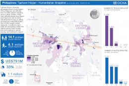

Philippines: Christmas lights brighten city hit hard by Typhoon Haiyan
Christmas carols and lanterns are lighting up Tacloban city in the Philippines. Six weeks after Typhoon Haiyan devastated the city and claimed thousands of lives, residents are starting to feel the spirit of Christmas. The need for a sense of normality is evident throughout the city.
When the super typhoon swept through the Philippines on 8 November, it affected the lives of 14 million people across the country. Homes, farmlands, bridges and power lines were destroyed in places like Tacloban, one of the hardest-hit cities, leaving many families stranded and without access to clean water and electricity. Aid organizations and the Government mounted a massive relief operation reaching millions of people with life-saving assistance. And just weeks ago, electricity came back to very few parts of Tacloban.
Bringing back the Christmas spirit
Ten power-generated lanterns shine brightly at the Santo Nino Church - one of the few buildings with electricity in Tacloban. As the authorities continue working on restoring power throughout the city, the illuminated church acts as symbol of Christmas, giving the residents a sense of hope and festivity.
“The lights are a symbol of hope for all of us in the midst of darkness,” says 66-year-old Maria de la Vega looking at the lanterns. “They not only make me feel the spirit of Christmas but more importantly the courage that brings hope. With or without Yolanda we will celebrate Christmas.”
A 17-metre Christmas tree has been erected in front of Tacloban’s city hall, creatively decorated with used water bottles and iron pipes left behind by the storm. Many people have crafted decorations from the rubble and have put up their own Christmas trees outside the skeletons of their houses. Recycled bottles have become ornaments, biscuit labels as garlands and plastic foam cups as snowflakes.
A Christmas tree surrounded by debris and rubble
In the neighborhood of Magallanes, the Miraflor family of eleven is sharing the spirit of the season with their community. Together they have decorated a Christmas tree which stands surrounded by debris and rubble.
“We found the tree in the debris and we started decorating it with what we could find,” says Marideth Miraflor. “Despite the desolation we will celebrate the fact that we are all alive and together.” Her husband Rodolfo, who was a fisherman, is now jobless as the storm swept away boats and other fishing gear.
Most people affected by the typhoon are still entirely dependent on aid and will miss out on eating lechon – or suckling pig – that usually crowns their Christmas feast. Those who no longer have houses will be celebrating Christmas in the halls and classrooms that still serve as evacuation centers.
“We will celebrate Christmas with candles, with sardines and noodles - what is important is that we are alive,” says Rosalinda Onida, 46, adding that lavish celebrations are out of the question. She shares her makeshift home built from iron sheeting, tarps and pieces of wood from the debris with her family.
Hope and resilience
Aid organizations continue to be busy providing essential aid as well as helping families recover and rebuild their lives. Electricity and water is trickling back into Tacloban and other typhoon-hit areas. The clearing of rubble and repairing of homes are providing jobs to displaced people. Many small businesses, including hotels and restaurants are reopening their doors, even if they have to rely on generators to operate.
“Just thinking about what occurred it is not going to help, we need to keep going,” says Ronalie Evangelista whose food kiosk was washed away. “I had to do something, we cannot rely on relief forever." Ronalie has now opened a new kiosk - a growing sign of economic resilience seen among the people of Tacloban.
“Communities affected by the storm have shown remarkable resilience and courage over the last six weeks, starting the difficult and daunting task of rebuilding their lives, in some cases from literally nothing," says UN Resident and Humanitarian Coordinator Luiza Carvalho. "They need our continued support."

{kind=link}